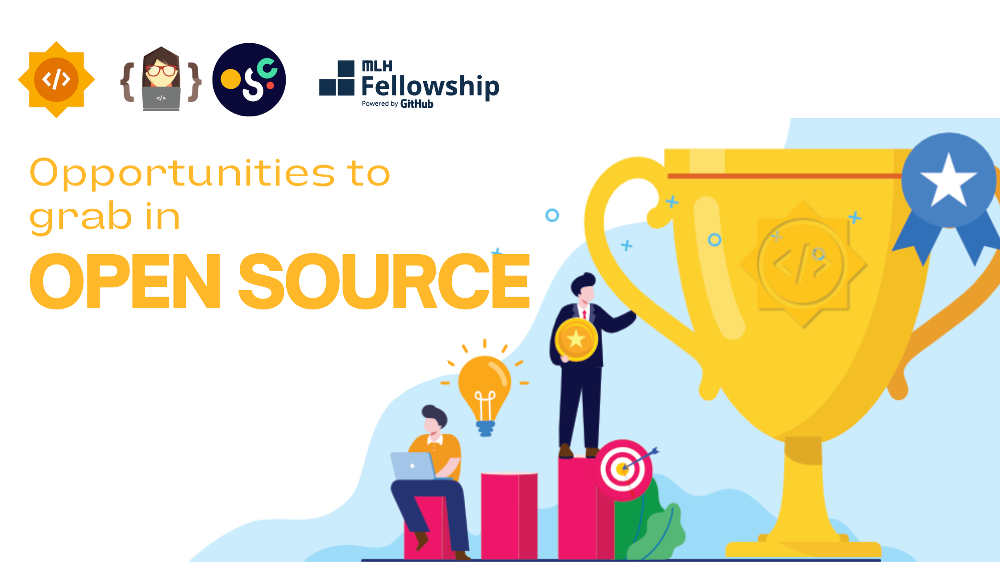

Now that you are familiar with what open-source is, let’s look at the different
opportunities in store for the aspiring contributors out there. This newsletter will give
you a brief idea about the various open-source programs and projects you can
participate in and contribute to.
GirlScript Summer of Code(GSSoC)
GirlScript Summer Of Code is an open-source program conducted every summer by the
Girlscript Foundation. GirlScript Summer of Code would give you a taste of contributing
to long open-source projects. Continuously for 3 months, you will contribute to your
assigned projects under the guidance of experienced mentors.
Google Summer of Code
The Google Summer of Code program is a program started by Google and has been
conducted for 17 years. It is a program that aims to promote open-source software
development among university students. There are a few organizations and these
organizations have mentors. First, the organizations apply to Google and after the
organizations are selected then the students apply to the organizations. Bear in mind
that you are not an employee of Google or even not an intern at Google. You’re working
with that organization that you applied to or got selected for. It is a paid program with a
stipend of 1500 USD for Medium Size Projects and 3000 USD for Large Size Projects in
India.
Google Summer Of Docs
One thing that an open-source project cannot get enough of is good documentation.
However, Google Season of Docs is a new program by Google where technical writers
and open-source organizations come together and work on open-source projects. The
technical writers write documentation for open-source organizations and also get paid
by Google. It is a worthwhile platform for students to learn from industry experts and to
work on open-source projects. Also, you need to remember that you must be aged 18 or
older at the time of registration to become eligible for Google Season of Docs.

Outreachy
Outreachy has internship projects in both open-source and open science. These
internship projects may include programming, research, user experience,
documentation, graphical design, data science, marketing, user advocacy, or event
planning.
Major League Hacking (MLH) Fellowship
The MLH Fellowship is a remote internship alternative for aspiring technologists where
you can spend 12 weeks building your skills by collaborating on real-world projects. 3
tracks are available for this internship: open-source, software development, and
production engineering. A 3-week prep program is also available for absolute beginners.
Open SummerOfCode
It is organized by Open Knowledge Belgium. All students will work in teams on different
open-source innovation projects provided by partnering organizations, companies, and
even governments. You don’t necessarily have to be staying in Belgium to apply for
Open Summer of Code, but you have to be allowed to work as a student under Belgian
regulation.
Explore the world of open source and elevate your career! Join reputable programs to
contribute to impactful projects. It's never too late to start. For guidance, connect with
Mozilla Club members who are ready to assist you on your open-source journey.
Exciting opportunities await– dive in!
Opportunities to grab in Open Source!
Mozilla Campus Club CCEW, Pune
25-02-2023